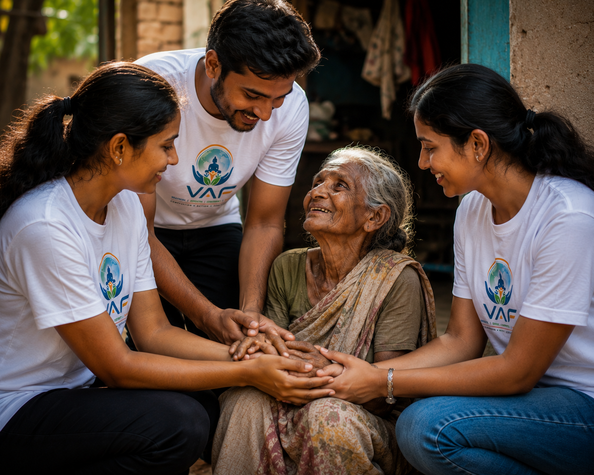
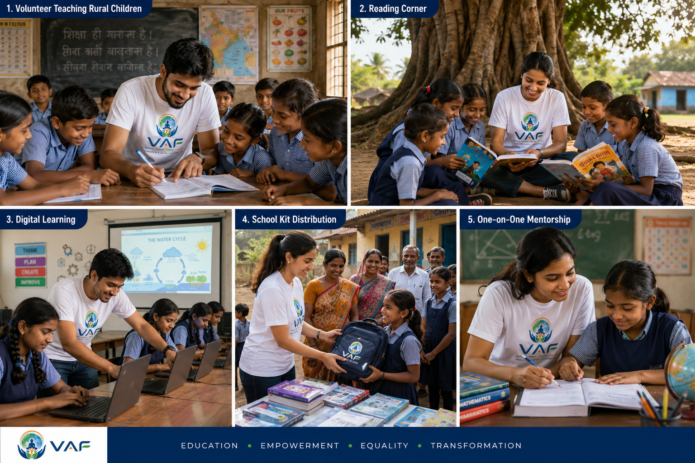

Vector for Advancement Foundation (VAF) is established to bridge the gap between community needs and meaningful actions—connecting people, ideas, institutions, and resources to create practical, measurable, and lasting solutions.


Vector for Advancement Foundation (VAF) is a community development organization committed in driving meaningful and measurable social progress. Just as Vector represents both direction and purpose, VAF serves as a guiding force that connects communities, institutions and individuals to create social impact.
We believe every Transformation begins with Compassion and grows through collective Action.
Join our mission to build a better tomorrow for all.